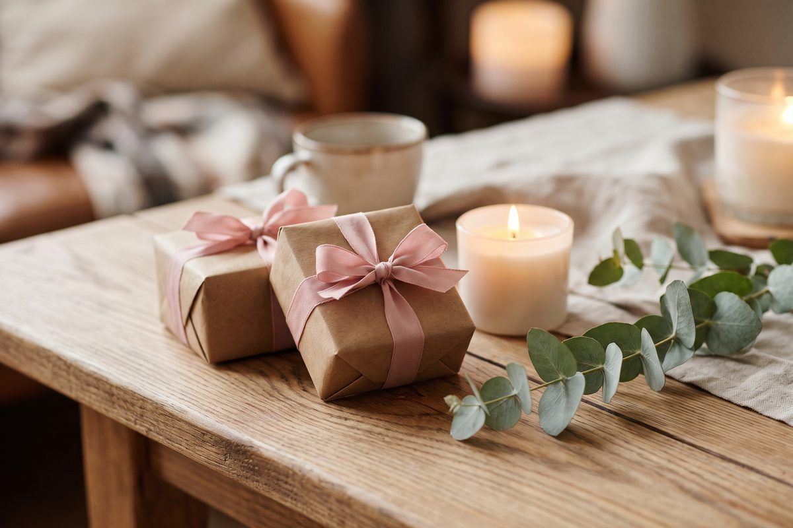

Idée cadeau pour un couple : 30 idées originales à offrir

EnregistrerTrouver un cadeau pour une seule personne, c'est déjà un casse-tête. Alors pour un couple, la mission se corse : il faut plaire aux deux, sans faire de jaloux, et si possible sortir des sentiers battus. Bonne nouvelle, les meilleurs cadeaux de couple ne sont pas les plus chers. Ce sont ceux qui créent un moment à vivre ensemble, un souvenir à garder, une occasion de se retrouver.
Que ce soit pour un anniversaire de couple, un Noël, une crémaillère ou juste pour faire plaisir, voici trente idées classées par envie et par budget. Vous trouverez forcément celle qui leur ressemble.
Des cadeaux à vivre à deux
Ce sont nos préférés, parce qu'ils offrent bien plus qu'un objet : ils offrent du temps ensemble. Un couple se souvient rarement d'un énième bibelot, mais il se souvient d'une expérience partagée.
- Un coffret d'activités à choisir parmi une sélection (bien-être, gastronomie, aventure), pour qu'ils se réservent enfin une sortie à deux.
- Une nuit insolite : cabane dans les arbres, bulle sous les étoiles, hébergement atypique. De quoi casser la routine sans partir loin.
- Un atelier à faire ensemble : cuisine, poterie, dégustation. On repart avec un savoir-faire et de belles images.
- Un abonnement à une box mensuelle qui les fera se retrouver chaque mois autour d'un rituel commun.
- Des billets pour un concert, un spectacle ou un match, selon leur passion partagée.
Nos coffrets coup de cœur à offrir
Wonderbox : Moments en Duo
Un large choix d'activités à vivre à deux : le cadeau parfait pour un couple qui a déjà tout, mais qui manque de temps rien qu'à lui.
Wonderbox : Nuit Insolite en Duo
Une nuit hors du commun pour un souvenir qui sort vraiment de l'ordinaire. Idéal pour un anniversaire de couple.
Liens partenaires : en passant par ces liens, vous soutenez le site sans payer plus cher.
Des cadeaux qui rapprochent
Pour un couple, le plus beau cadeau est souvent celui qui les invite à passer du temps ensemble, à se parler, à rire. Les jeux de couple et les carnets à remplir cartonnent pour cette raison : ils transforment une soirée ordinaire en vrai moment à deux.
- Un jeu de cartes conçu pour les couples, avec des questions et des défis pour se redécouvrir.
- Un carnet de couple à remplir ensemble, pour garder une trace de leur histoire.
- Un jeu de société à deux, parfait pour les soirées à la maison.
- Une boîte de "bons pour" à s'offrir mutuellement tout au long de l'année.
Nos jeux préférés pour les couples
Conversations en Couple
Un jeu de cartes tout simple pour lancer de belles discussions à deux et se redécouvrir, soir après soir.
Kit de moulage main couple
Immortalisez leurs deux mains enlacées dans une sculpture à faire ensemble. Une activité tendre et un souvenir qui reste.
Liens partenaires : vous soutenez le site sans payer plus cher.
Des cadeaux à petit prix qui font mouche
Un beau cadeau de couple ne dépend pas du budget. Voici des idées à moins de vingt euros qui touchent souvent plus qu'un présent coûteux.
- Un cadre photo avec un souvenir marquant de leur histoire.
- Deux mugs assortis pour leurs matins à deux.
- Un jeu de questions ou de dilemmes à faire en amoureux.
- Un carnet à imprimer rempli d'idées de rendez-vous et de défis à vivre ensemble.
- Une jolie bougie parfumée pour leurs soirées cocooning.
Pour une sélection pensée pour les fêtes, voyez aussi nos idées cadeaux de Noël pour un couple. Pour la fête des amoureux, découvrez nos idées de cadeaux de Saint-Valentin pour sortir de la routine.
💘 Cadeau de bienvenue
Le Kit des Amoureux, offert 🎁
52 idées de rendez-vous, 80 questions, des jeux et des défis à vivre à deux : recevez notre carnet à imprimer gratuitement, et offrez-le à un couple que vous aimez (ou à vous-mêmes).
Recevoir le kit gratuitComment bien choisir le cadeau ?
Avant d'acheter, posez-vous une question simple : qu'est-ce qui manque le plus à ce couple ? Si c'est le temps, offrez une expérience qui les oblige à se réserver un moment. Si c'est la complicité, offrez un jeu ou un carnet qui les fait se parler. Si c'est un souvenir, offrez quelque chose qu'ils garderont.
Évitez les cadeaux trop pratiques (électroménager, objets utilitaires) qui manquent de tendresse, sauf s'ils correspondent à une vraie envie exprimée. Un cadeau de couple réussi raconte quelque chose de leur histoire, ou leur en fait vivre un nouveau chapitre.
En résumé
Le meilleur cadeau pour un couple n'est pas le plus cher, c'est celui qui crée un moment à deux. Une expérience à vivre, un jeu qui rapproche, un souvenir à garder : voilà ce qui fait mouche. Et si vous manquez d'inspiration pour la suite, notre Kit des Amoureux regorge d'idées à offrir ou à vivre, gratuitement.
💌 La lettre de Cupidon
Une idée pour votre couple, chaque semaine
Recevez une nouvelle idée de rendez-vous, un jeu ou un défi à tester à deux, directement dans votre boîte mail. Gratuit, et sans blabla.
Une idée par semaine. Désinscription en un clic.